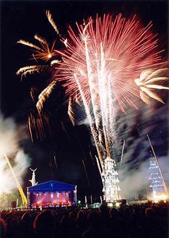

Skip Navigation | Home | Contact | Picture Gallery | Projects


Produced with OOMF!
This is an archive site of the events produced by the Oxford-based festival organisation, Produced with OOMF!, which grew out of the millennium festival event 'OOMF!'. Between 2000 and 2005 the organisation ran events celebrating the millennium and Oxfordshire. We hope you enjoy this mix of images and memories of some spectacular and entertaining moments at the turn of the century.

This is the archived site of the Oxfordshire Millennium celebrations produced by the company Oxfordshire 2000, which later became known as Produced with OOMF!. The main millennium celebrations were held in the summer of the year 2000 and were followed by a series of creative and celebratory events between the years 2000 and 2005
OOMF! 2000
In 1998 a group of Oxfordshire's creative and city leaders came together to organise a spectacular event to celebrate the new century. The event, which became known as OOMF! (Oxfordshire's Own Millennium Festival) brought international artists to Oxford to work with local people leading to a unique and memorable event on the evening of July 1st 2000. Over the course of the weekend the team also ran Oxford's first Open City event, animating historic buildings, colleges and other interesting buildings across the city with music, theatre, art and entertainment.
On the Saturday evening of 1 July 2000 around 50,000 people gathered in Oxford's South Park to watch 3,000 local people participate in processions and an outdoor event set to Oxford's new musical theme 'Symphony in Morris Minor' by Nick Bicât.
The impact of the summer event led to the production team offering a winter reprise 'A Bit More OOMF! On New Year's Eve' which was held as the new century got into its stride on a wild and windy night as 2000 merged into 2001. While events around the country were cancelled because of gales the evening brought winds and rain to Oxford - and brave crowds to the park by the ice-rink to enjoy firesculptures, flags, music and the New Year beacon.
Jubilee Open City 2002
In the summer of 2002 the Lord Lieutenant of Oxfordshire invited the OOMF! Team to come together to open the city once again, this time in celebration of the Queen's Golden Jubilee. The three day festival linked with BBC Music Live and the celebrations focussed on a 'royal' event at the Pitt Rivers Museum and the lighting of a Jubilee Beacon. Particularly intriguing was the opening of Oxford Prison, then still undeveloped.
Oxford Open Water Festival 2003
This celebration of Oxfordshire's Waterways sprang from a concept that one of Oxfordshire's strongest links is its waterways. The week long festival featured three parts - Open Water events, a new water musical 'Hydrogen Two Oxygen', and the Oxfordshire Heritage Boat Journeys.
The Ice Garden 2005
The Clarendon Quad of the Bodleian Library at the University of Oxford was transformed into The Ice Garden. Ice works, soundscapes and text projections from artists including Antony Gormley and Ian McEwan brought together the Cape Farewell artists' response to the changes in the Arctic and the threat to climate.